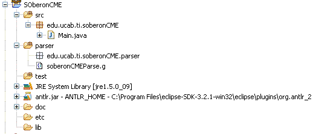

| Es necesario leer todo este documento para poder tener éxito en el proyecto. Recuerden que es necesario aprobar el proyecto independientemente de la teoría para aprobar la materia |
| conenido |
|---|
Definición
| Useful Information El Alcance del Proyecto fue reducido para poder ser cubierto en lo que queda de semestre. La cantidad de métricas a implementar disminuyó. Es importante que impriman esta nueva versión. Cualquier duda debe ser aclarada en horas de clases, o a través del correo electrónico. |
Generador de Métricas para programas en el lenguaje SOberon
En la actualidad el desarrollo de grandes proyectos de software se ha convertido en una tarea común y de extrema importancia. Existen muchas herramientas de desarrollo y sistemas comerciales que ofrecen facilidades para que los líderes de proyecto y los desarrolladores consulten una serie de medidas cuantitativas sobre el sistema de software en desarrollo y el proceso utilizado para producirlo. Este tipo de herramientas son denominadas Generadores de Métricas (" Metric Tools" en inglés).
Existen diversos tipos de métricas que se pueden calcular para un proyecto de software. Entre los tipos de métricas disponibles son de especial importancia las métricas a nivel de código fuente, las cuales son valores que se determinan examinando las líneas de código de los módulos/programas que conforman un software.
En este proyecto se implementará un Generador de Métricas para un subconjunto del lenguaje de programación Oberon que llamaremos SOberon (por Sub-Oberon). Esto lo harán utilizando el generador de compiladores Antlr y el lenguaje de programación Java. La gramática de SOberon a utilizar se encuentra Gramática SOberon
El generador de métricas de programas SOberon se llamará SOberonCME (por Calculador de Métricas para SOberon), y debe funcionar como un comando de consola que reciba como parámetro el nombre del directorio donde se encuentran los programas fuentes a analizar (archivos con extensión ".sob") y produzca como resultado un conjunto de reportes sobre las métricas calculadas.
Métricas a calcular
| Métricas por Operación | Líneas Totales (LT) Líneas de Código (LDC) Líneas de Comentarios (LC) |
| Métricas por Archivo | Líneas Totales (aLT) Líneas de Código (aLDC) Líneas de Comentarios (aLC) Total de Operaciones (aOP) |
| Métricas por Proyecto | Número de Archivos (NM) Líneas Totales en el Proyecto (tLT) Total de Operaciones (tOP) Total de Líneas de Código (tLDC) Total de Líneas de Comentarios (tLC) |
Descripción de las métricas
A continuación se presenta una breve descripción de las métricas a calcular por SOberonCME.
- LDC (Líneas de Código): Toda línea del programa fuente que no está en blanco o contenga sólo comentarios, es contabilizada como una línea de código.
- LC (Líneas de Comentarios): Una línea del programa fuente es contabilizada como línea de comentario si posee cualquiera de los delimitadores de comentarios ("(" ? ")") o posee parte de un comentario que ocupa varias Líneas.
La siguiente tabla presenta un ejemplo de una porción de un programa SOberon y la manera en que se deben contabilizar las Líneas:
| Líneas del Programa Fuente | LDC | LC | LB |
|---|---|---|---|
| IF (A>=B) THEN (* - comentario sobre la condición *) |
X | X | |
| (* | X | ||
| - Comentario Multi-Línea - | X | ||
| *) | X | ||
| A := A - B; | X | ||
| |
X | ||
| (* - Comentario de una línea - *) | X | ||
| END | X | ||
| |
Entre las métricas por Operación se destacan:
- Número de Operaciones Locales (NOL): Debido a que SOberon permite la definición de operaciones anidadas, además de reportar la cantidad de declaraciones locales por operación, es necesario también reportar/calcular la cantidad de operaciones locales a cada operación.
- Nivel de Profundidad (NDP): El nivel de profundidad es un valor entero asociado a una Operación y posee las siguientes propiedades:
- NDP(Op) = 1, si Op es local al módulo de programa
- NDP(Op) = 1 + NDP(padre(Op)), si Op no es local al módulo de programa y padre(Op) es la Operación donde Op es local.
- Número de Puntos de Retorno (NPR): esta métrica sirve como medida para estimar los costos de mantenimiento del código, debido a que una Operación con múltiples puntos de salida puede ser difícil de entender y en consecuencia de modificar/mantener. En SOberon, los puntos de retorno están denotados por las instrucciones EXIT y RETURN.
Entregas
El proyecto se realizará en dos (2) entregas por un valor total de cuarenta (50) puntos sobre el total de 100 de la asignatura. El contenido y condiciones de cada entrega se describen a continuación.
Entrega 1
Analizador Léxico (Lexer)
El objetivo de esta etapa es producir con Antlr el analizador Léxico que permite obtener los tokens/lexema presentes en los programas SOberon. Para esta entrega deberán:
- Identificar los componentes léxicos presentes en un programa SOberon.
- Definir en Antlr el Analizador Léxico que permita descomponer un programa SOberon en los lexemas que lo forman.
- Escribir una clase de prueba del Analizador Léxico: SOberonCME_Lex con un método principal (main()) el cual reciba como argumento el directorio donde se encuentran los programas SOberon a analizar y produzca en la salida estandard (System.out en Java) la lista de componentes léxicos (tokens) y los lexemas asociados.
- El directorio con los archivos SOberon debe ser tratado en profundidad (recursivamente).
- La lista de componentes léxicos debe contener un componente Léxico por línea, en el siguiente formato:
<lexema>:<identificador_lexico>:<linea> - Los posibles errores lexicográficos deben reportarse en la salida estándar de error (System.err en Java) usando el siguiente formato:
error Léxico <archivo> ( n ): <mensaje>
donde <archivo> es el paso al archivo donde se consiguió el error, n es el número de la línea donde se detectó el error, y <mensaje> es la descripción del error encontrado.
Analizador Sintáctico
El objetivo de esta etapa es producir con Antlr el analizador sintáctico que permite construir el árbol de sintaxis abstracta correspondiente a cada archivo SOberon. Para esta entrega deberán:
- Definir en Antlr el Analizador Sintáctico (Parser) que permita verificar la sintaxis un programa SOberon y adicionalmente producir una estructura de datos con la información del programa requerida para hacer el cálculo de las métricas antes mencionadas.
- Escribir un programa SOberonCME_Sin con un método principal (main()) el cual reciba como argumento el directorio donde se encuentran los programas SOberon a analizar y produzca como salida un único llamado "arbol.txt" contentivo de la sintaxis abstracta de cada uno de ellos, usando como formato el lenguaje generado por la siguiente gramática en notación BNF:
archivo = nodo
nodo = "(" IDENTIFICADOR listaSubNodos ")"
listaSubNodos = nodo ListaSubNodos | []
La sintaxis abstracta consistirá de un nivel para el proyecto, bajo el cual habrá una entrada para cada módulo indicando el paso al archivo que lo contiene. Bajo la entrada para cada módulo una entrada para cada Operación (rutina). Ejemplo:
(proyecto
(.\etc\data\BigCaps.sob
(main)
(DoName)
(DoAll)
...
)
(.\etc\data\BinaryTree.sob
(main)
(insert)
(Search)
...
)
...
)
- Reportar los posibles errores sintácticos en la salida estándar de error (System.err) usando el siguiente formato:
error Sintáctico : <archivo> ( n ) : <mensaje>
donde <archivo> es el paso al archivo donde se consiguió el error, n es el número de la línea donde se detectó el error, y <mensaje> es la descripción del error encontrado.
Entrega 2: Verificador Semántico, Tabla de Símbolos y Generador de Métricas
El objetivo de esta etapa es realizar las verificaciones semánticas pertinentes e implementar la tabla de símbolos que maneje la información requerida para calcular las métricas citadas. Para esta entrega deberán:
- Identificar e implementar las validaciones semánticas que se deben realizar para los programas de entrada.
- Implementar la clase TablaDeSimbolos que almacena la información correspondiente a los programas SOberon analizados.
- Modificar el Analizador Léxico y el Analizador Sintáctico de manera que se actualice la tabla de símbolos a medida que se realiza el análisis.
- Escribir un programa SOberonCME con un método principal (main()) el cual reciba como argumento el directorio donde se encuentran los programas SOberon a analizar y produzca como salida un único llamado "metricas.html" contentivo de las métricas básicas para el proyecto, cada módulo, y cada operación, usando como formato el lenguaje generado por la siguiente gramática en notación BNF:
archivo = nodo
nodo = "(" IDENTIFICADOR LT LDC LC LB listaSubNodos ")"
listaSubNodos = nodo ListaSubNodos | []
donde los terminales LT, LDC, LC y LB son, respectivamente, los valores de las métricas para Líneas totales, Líneas de código, Líneas de comentario y Líneas en blanco.
- El formato HTML debe aplicarse de la siguiente manera:
- El contenido del archivo debe estar encerrado entre tags <html> y </html>
- El archivo debe comenzar por una sección <head> que incluya una subsección <title>.
- El conjunto de métricas debe estar en una sección <body>.
- Cada una de las siguientes subsecciones deberán estar encerradas entre tags <blockquote>.
- El título de la sección principal será "proyecto" y estará encerrado en tags <h1>.
- Las subsecciones destinadas a los módulos tendrán como título el paso al archivo correspondiente encerrado entre tags <h2>.
- Las subsecciones correspondientes a las operaciones tendrán como título el nombre de la Operación encerrado entre tags <h3>.
- El título de cada subsección estará inmediatamente seguido de una tabla de dos filas, y una columna por métrica. La primera fila contendrá los nombres de las métricas usando tags <th>. La segunda fila contendrá los valores de las métricas usando tags <td>. El tag <table> que introduce cada tabla deber? tener un atributo "summary" con valor "métricas".
Pueden encontrar un ejemplo del formato de la salida aquí.
- Reportar los posibles errores semánticos en la salida estándar de error (System.err) usando el siguiente formato:
error semantico : <archivo> ( n ) : <mensaje>
donde <archivo> es el paso al archivo donde se consiguió el error, n es el número de la línea donde se detectó el error, y <mensaje> es la descripción del error encontrado.
Equipos
Equipos de proyectos
Los equipos serán de 2 integrantes, y sólo con autorización del profesor se podrá modificar un equipo durante el semestre
Normas Generales
Cumplir con lo que especifican estas normas es OBLIGATORIO. Por favor revisen todos los puntos aquí discutidos antes de entregar sus proyectos. Las entregas que incumplan cualquiera de las normas aquí descritas obtendrán una nota de cero puntos.
Estructura de Directorios
| Las pruebas sobre la compilación y ejecución de los programas serán llevadas a cabo en forma automatizada usando un guión (script), por lo que los proyectos que no cumplan con la estructura de directorios REPROBARAN LA EVALUACION SOBRE LA EJECUCION. |
Cada entrega deberá contener la siguiente información. La estructura y los nombres de los directorios deben ser respetados al pie de la letra, sin cambiar singulares por plurales, ni minúsculas por mayúsculas:
- Un directorio llamado src contentivo de los archivos fuentes del programa.
- Un directorio src/edu/ucab/ti/soberonCME y subdirectorios con los fuentes del programa.
- Un directorio parser contentivo de los archivos con las gramáticas.
- Un directorio parser/edu/ucab/ti/soberonCME/parser con el código fuente generado por ANTLR.
- Un directorio llamado test contentivo del código fuente de las pruebas.
- Un directorio llamado lib contentivo de las librerías usadas por el programa.
- Un directorio doc contentivo de cualquier documentación relacionada con la entrega en formato HTML.
- Un directorip doc/api contentivo de la documentación de los fuentes generada usando el programa javadoc.
- Un directorio etc contentivo de cualquier otro archivo relacionado con la entrega.
- Nada más.
En Eclipse, la estructura del proyecto debe verse así:

| Puede obtener un archivo comprimido con una maqueta de proyecto con la estructura de directorios requerida aquí |
Documentación
Todas las entregas deberán estar acompañadas de por lo menos un archivo llamado index.html en el directorio doc que contenga:
- Membrete identificando la universidad, facultad, escuela, asignatura, y semestre.
- Fecha.
- Los nombres y apellidos de los integrantes del equipo.
- El nombre y propósito del proyecto.
- Comentarios respecto a las estrategias utilizadas en la ejecución del proyecto.
- Comentarios respecto a las dificultades encontradas y las limitaciones presentes en la implementación.
Archivos
- Todos los archivos, incluyendo los programas fuente deben estar identificados con:
- El nombre de la universidad
- El nombre de la materia
- El nombre del proyecto
- Los nombres de los integrantes del equipo.
- Todos los documentos explicativos deben estar en formato HTML. Los que se encuentren en otro formato (Word por ejemplo) no serán leídos ni considerados de manera alguna en la evaluación.
Programas
Antes de entregar, deben confirmar que sus programas compilan y corren. No se evaluará la ejecución de programas que no sean el producto exacto de los fuentes entregados.
Ambiente de Programación Recomendado
El ambiente de programación recomendado para este proyecto es el siguiente:
los estudiantes podrán usar otros ambientes de programación siempre y cuando el generador de compiladores sea ANTLR y el lenguaje de programación sea Java.
Instalación del Ambiente de Programación
- Instalar Java 5.0.
- Instalar Eclipse 3.2.1 según las instrucciones dadas en su página de download y configuración.
- Instalar el Plugin ANTLR para Eclipse según las instrucciones en su sitio Web.
- Descomprimir el archivo comprimido con la maqueta del proyecto
- Ejecutar Eclipse y usar la opción File/Import.../General/Existing Projects into Workspace para importar el proyecto a Eclipse.
Gramática de SoberonCME
Gramática del Lenguaje SOberon
La siguiente gramática está escrita en uno de los estilos de BNF:
- Los Símbolos no-terminales aparecen como identificadores en mayúsculas y minúsculas.
- Los Símbolos terminales aparecen entre comillas.
- La definición de los componentes léxicos aparece como parte de la gramática, como suele hacerse en BNF.
Deben tomar en cuenta que:
- En SOberon, todas las palabras reservadas deben estar en mayúscula.
- Para este proyecto consideraremos que dos identificadores en SOberon que tienen las mismas letras y pero difieren en mayúsculas y minúsculas son distintos.
La Gramática
module = "MODULE" ident ";" [ImportList] DeclarationSequence
["BEGIN" StatementSequence] "END" ident "."
ImportList = "IMPORT" ident {"," ident} ";"
DeclarationSequence = {"CONST" {ConstantDeclaration ";"} |
"TYPE" {TypeDeclaration ";"} |
"VAR" {VariableDeclaration ";"} }
{ProcedureDeclaration ";"}
ConstantDeclaration = ident "=" ConstExpression
ConstExpression = expression
expression = SimpleExpression [relation SimpleExpression]
SimpleExpression = ["+"|"-"] term {AddOperator term}
term = factor {MulOperator factor}
factor = number | CharConstant | string |
designator [ActualParameters] | "(" expression ")"
CharConstant = '"' character '"'
string = '"' {character} '"'
designator = qualident {"." ident | "[" ExpList "]" | "(" qualident ")" }
ExpList = expression {"," expression}
ActualParameters = "(" [ExpList] ")"
MulOperator = "*" | "/" | "DIV" | "MOD" | "&"
AddOperator = "+" | "-" | "OR"
relation = "=" | "#" | "<" | "<=" | ">" | ">="
TypeDeclaration = ident "=" type
type = qualident | ArrayType | RecordType | PointerType | ProcedureType
qualident = [ident "."] ident
ArrayType = "ARRAY" length {"," length} "OF" type
length = ConstExpression
RecordType = "RECORD" ["(" BaseType ")"] FieldListSequence "END"
BaseType = qualident
FieldListSequence = FieldList {";" FieldList}
FieldList = [IdentList ":" type]
IdentList = ident {"," ident}
ProcedureType = "PROCEDURE" [FormalParameters]
VariableDeclaration = IdentList ":" type
ProcedureDeclaration = ProcedureHeading ";" ProcedureBody ident
ProcedureHeading = "PROCEDURE" ident [FormalParameters]
FormalParameters = "(" [FPSection {";" FPSection}] ")" [":" qualident]
FPSection = ["VAR"] ident {"," ident} ":" FormalType
FormalType = {"ARRAY" "OF"} qualident
ProcedureBody = DeclarationSequence ["BEGIN" StatementSequence] "END"
StatementSequence = statement {";" statement}
statement = [assignment | ProcedureCall | IfStatement | CaseStatement |
WhileStatement | RepeatStatement | LoopStatement |
"EXIT" | "RETURN" [expression] ]
assignment = designator ":=" expression
ProcedureCall = designator [ActualParameters]
IfStatement = "IF" expression "THEN" StatementSequence
{"ELSIF" expression "THEN" StatementSequence}
["ELSE" StatementSequence] "END"
CaseStatement = "CASE" expression "OF" case
{"|" case}
["ELSE" StatementSequence] "END"
case = [CaseLabelList ":" StatementSequence]
CaseLabelList = CaseLabels
{"," CaseLabels}
CaseLabels = ConstExpression [".." ConstExpression]
WhileStatement = "WHILE" expression "DO" StatementSequence "END"
RepeatStatement = "REPEAT" StatementSequence "UNTIL" expression
LoopStatement = "LOOP" StatementSequence "END"
ident = letter {letter | digit}
letter = "A" .. "Z" | "a" .. "z"
number = digit {digit}
digit = "0" | "1" | "2" | "3" | "4" | "5" | "6" | "7" | "8" | "9"
comment = "(" any ")"
donde any representa cualquier cadena de caracteres que no incluya "(" ni ")".
Links Importantes
- [1] ETH Oberon Home Page
http://www.oberon.ethz.ch/
- [2] Oberon Code-Samples Database
http://www.oberon.ethz.ch/cdb/
- [3] RSM Metrics Narrative
http://msquaredtechnologies.com/m2rsm/docs/rsm_metrics_narration.htm